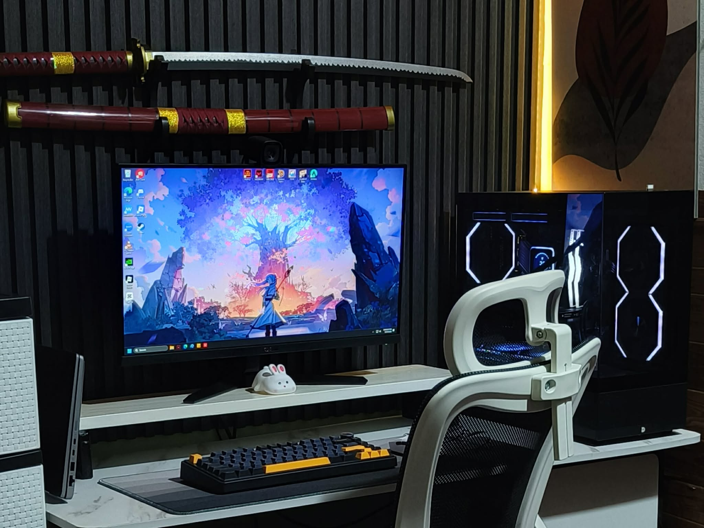

My journey started with curiosity, grew with challenges, and continues with a passion for creating solutions that matter.
Want to know where that journey leads? Let’s explore!
Intro

Hello, my name is Ma. Ella Vergara.
I’m a fast learner who embraces every challenge with dedication and heart. I believe that with passion and persistence, we can learn anything and continuously grow into the best version of ourselves.
I’m still on a journey to grow my experience and capabilities in Data Analytics. And I’m deeply committed to continuous learning and growth. With dedication and curiosity, I strive each day to improve and move closer to becoming the best in this field—because I believe there’s always something new to learn.
A Leave Tracker that automatically computes employee leave balances,
saving time and removing the hassle of manual input. Employees simply select
the correct option from a dropdown menu, and the tracker does the rest.
Advance Leave Tracker
An advanced leave tracker that manages multiple leave types, balances,
and consolidated reports. It also tracks RTO (onsite) days, reducing the need
for manual tab consolidation while providing an intuitive, interactive design.
Salary Deduction Tracker
Easily stay on top of your finances by tracking monthly salary deductions with accuracy.
This tool lets you cross-check contributions with official government records,
ensuring your deductions are always correct and up to date.
Powerful VBA and Macro-enabled tools for automating workflows, streamlining reporting, and saving valuable time on repetitive tasks.
Documents Data Entry Form
A Document Data Form streamlines data entry by removing the need to manually navigate through details. Just fill out the form, and your entries are automatically organized into the correct columns. Designed for handling thousands of records with consistent column naming, this tool ensures both accuracy and efficiency. Plus, every entry is securely saved in your "Logs" sheet, giving you a reliable record for reference and documentation.
Data Splitter
This Data Splitter tool quickly separates combined data into individual cells based on their headers. It allows you to easily filter and clean your data by selecting only the headers you need. With a simple copy feature, you can transfer the split data to another sheet or file in just a few clicks. The reusable template also lets you run the process again effortlessly whenever needed.
Combining Multiple Excel Files into a Single File
Transform your data into a single file with just one click! This tool can effortlessly merge multiple .csv, .xls, or .xlsx files into a single file, eliminating the hassle of manually transferring data between them.
Hi, I’m Elay, a passionate data enthusiast and problem solver. I specialize in Excel automation, data analysis, and building tools that make workflows faster and smarter.
Contact
If you’d like to get in touch, just click the button below to send me an email directly!